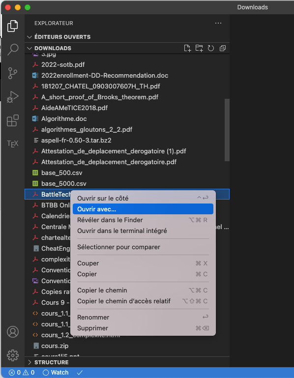
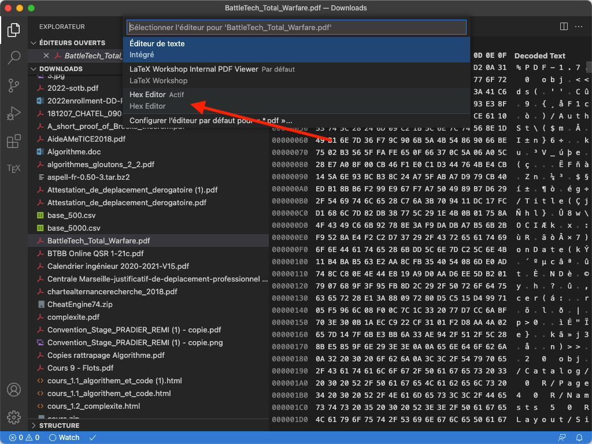
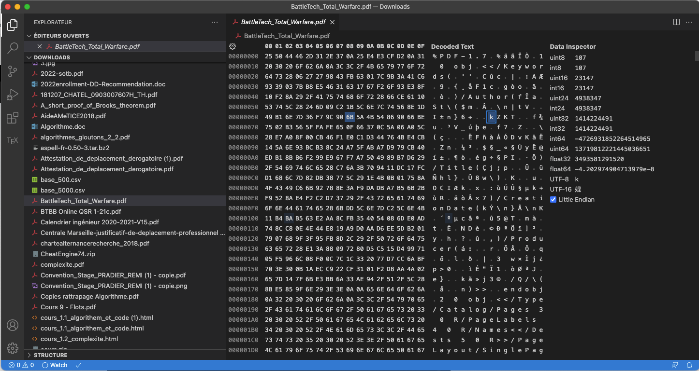

Structure d'un fichier
Stocker des données est une préoccupation depuis les origines de l'informatique : d'abord sur cartes perforées, puis sur bandes magnétiques et jusqu'aux disques durs et clés actuelles. Un fichier est ainsi un ensemble de données que l'on peut lire ou écrire pour les sauvegarder. Nous n'entrerons cependant pas dans les détails des systèmes de fichiers (comment sont effectivement stockés les fichiers sur le disque dur), car c'est une affaire (très) compliquée. Nous n'aborderons que le strict nécessaire pour les manipuler en python.
Toutes les manipulations spécifiques des fichiers (buffer, impossibilité de modifier, etc) sont issues des origines de l'informatique où stocker et charger des données était une chose compliquée physiquement (voir par exemple le chargement d'un programme depuis une cassette sur un TO7 qui prenait plus d'un quart d'heure... Et c'est du vécu, le TO7 a été ma première machine)
Système de fichiers
Un fichier est constitué d'une suite de blocs sur le disque dur, chaque bloc ayant une adresse contenant le bloc suivant. C'est une liste chaînée de tableaux de même taille contenant les données (des octets).
Ce format a été choisi parce que :
- des fichiers de tailles différentes doivent pouvoir être ajoutés et supprimés du disque dur. La place y est donc fragmentée, et il n'est pas sûr de pouvoir avoir la taille requise pour un fichier.
- on doit pouvoir ajouter des choses à un fichier sans avoir à tout re-écrire
Les limitations sont donc :
- on accède au fichier petit à petit. Il faut une tête de lecture qui voyage de bloc en bloc.
- il est impossible d'insérer des choses dans un fichier. On peut juste ajouter des éléments à la fin de celui-ci.
- le système de fichier dépend du système d'exploitation.
- écrire/lire sur un disque est coûteux en temps. Il est nécessaire d'avoir une mémoire tampon ce qui rend asynchrone la lecture et l'écriture d'un fichier.
Ce qu'on peut faire avec un fichier :
- ouvrir le fichier : c'est se préparer à l'utiliser. Cette étape crée un buffer (mémoire tampon), un pointeur de bloc, une tête de lecture, etc.
- fermer un fichier : arrêter de s'en servir. Il est indispensable de toujours fermer un fichier après s'en être servi. On écrit en effet à cette étape les dernières instructions non encore passées du buffer au disque dur (c'est comme démonter une clé USB proprement).
- lire un fichier : on fait avancer la tête de lecture du fichier, d'une ligne ou d'un nombre donné d'octets
- écrire un fichier : on ajoute des données à la fin d'un fichier (qui peut être initialement vide). Souvent on écrit pas tout de suite sur le disque dur, on attend d'avoir un nombre suffisant de données dans la mémoire tampon.
Au niveau de l'ordinateur, utiliser un fichier, c'est compliqué.
Types de fichiers
On a coutume de séparer les fichiers en deux grandes familles : les fichiers texte et les fichiers binaires. Cette séparation, essentiellement historique, est un peu artificielle mais vous trouverez encore souvent cette distinction :
- Les fichiers binaires sont les plus nombreux puisque c'est presque tous les fichiers : les images, vidéos, programmes, etc. Il faut un outil spécial pour les utiliser, c'est à dire un moyen de passer de l'octet à sa signification. On peut aider l'utilisateur en mettant une extension à son nom correspondant au type de fichier, mais ce n'est pas obligatoire.
- Les fichiers textes sont eux aussi constitués de nombres (un ordinateur ne connaît que ça), mais on peut leur faire correspondre des caractères via un code (voir partie format).
Passer des octets à leurs significations pour un fichier se fait via un codec (codeur/décodeur). Il y en a pour les fichiers binaires le codec MPEG4 par exemple, mais aussi pour les fichiers texte même si dans ce cas là on parlera plutôt d'encodage (comme utf-8).
Voir un fichier
Savoir comment interpréter les données d'un fichier n'est pas une chose facile car du point de vue du système un fichier n'est que suite de page contenant des octets.
Pour savoir quel est le format d'un fichier, on ne possède que de 2 moyens :
- un moyen indirecte via le nom du fichier
- un moyen direct encodé directement dans le format
Extension
Pour aider le système à savoir quel application ouvrir lorsque l'on clique sur lui on a coutume de finir le nom d'un fichier par 3 (parfois 4) lettres précédées d'un "." appelé extension. Par exemple le fichier de nom chaton.jpg peut contenir n'importe quoi, mais on s'attend à ce qu'il contienne l'image d'un chaton codé au format jpeg. Changer l'extension d'un fichier ne change pas magiquement son format...
Utilisez toujours une extension à vos fichiers. Cela permet de gagner beaucoup de temps pour ouvrir directement la bonne application pour lire votre fichier.
Magic numbers
Certains types de fichiers sont reconnaissables par leurs premiers octets. On appelle ça des magic number ou des signatures. Si vous ouvrez un fichier pdf par exemple, vous remarquerez qu'il commence par les caractères ASCII : %PDF-. Mais ce n'est pas la norme. Donc pour vous éviter des soucis, pensez à bien utiliser les extensions de fichier pour aider votre système d'exploitation à trouver la bonne application à ouvrir.
Éditeur hexadécimal
Sans extension ou sans idée de ce que contient un fichier, ce n'est qu'une suite d'octets. Pour s'en rendre compte :
Installez l'extension Hex Editor pour vscode.
Vous pourrez la trouver dans le menu menu Affichage > extension puis recherchez Hex Editor dans la barre de recherche pour l'installer.
Cette extension permet d'ouvrir tout fichier comme la suite d'octet qu'il est réellement. Pour cela :
- ouvrez une nouvelle fenêtre avec vscode : menu Fichier > nouvelle fenêtre
- dans cette nouvelle fenêtre : menu Affichage > explorateur puis cliquez sur open folder pour choisir un dossier contenant des images, des pdf et d'autres types de fichiers (souvent le dossier téléchargement est un bon candidat)
- cliquez droit sur un fichier et choisissez ouvrir avec...

- choisissez "Hex editor"

- on obtient quelque chose en 3 parties : les octets, l'interprétation ASCII de chaque octet et des informations :
